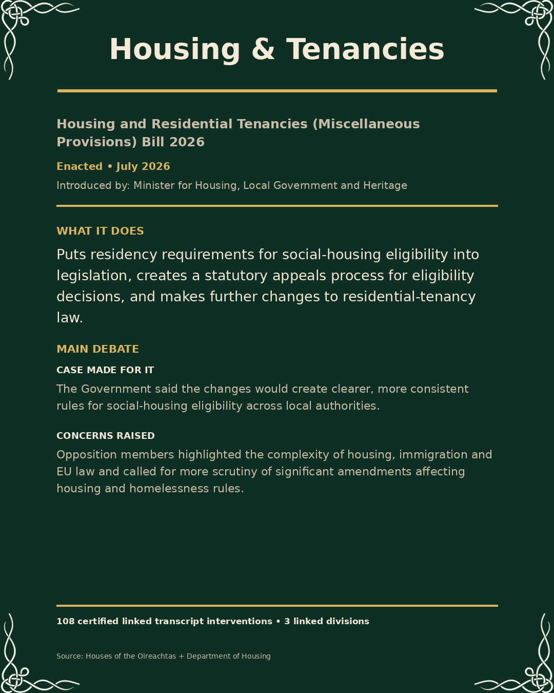
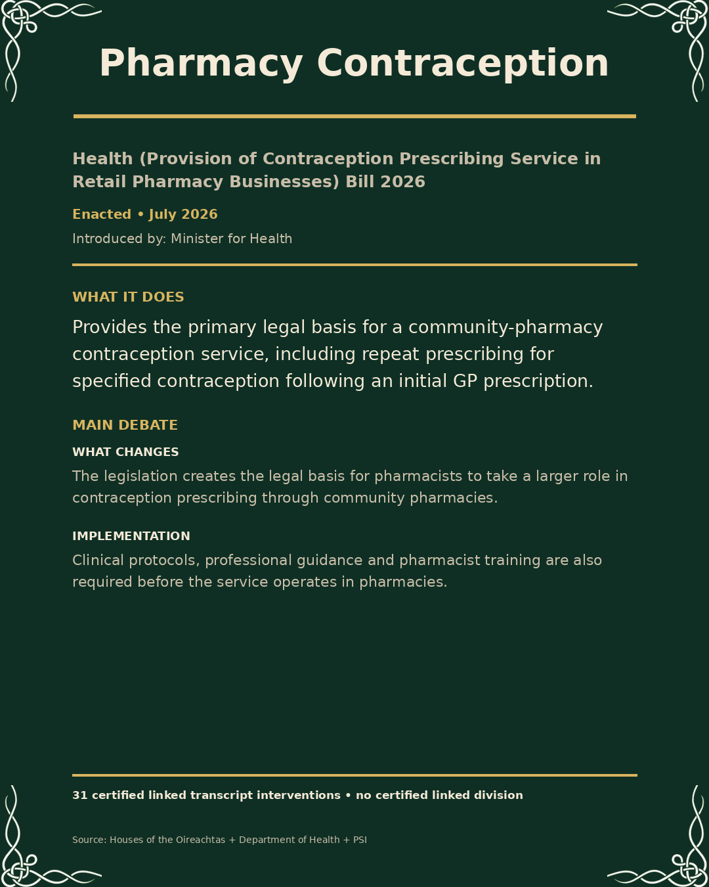
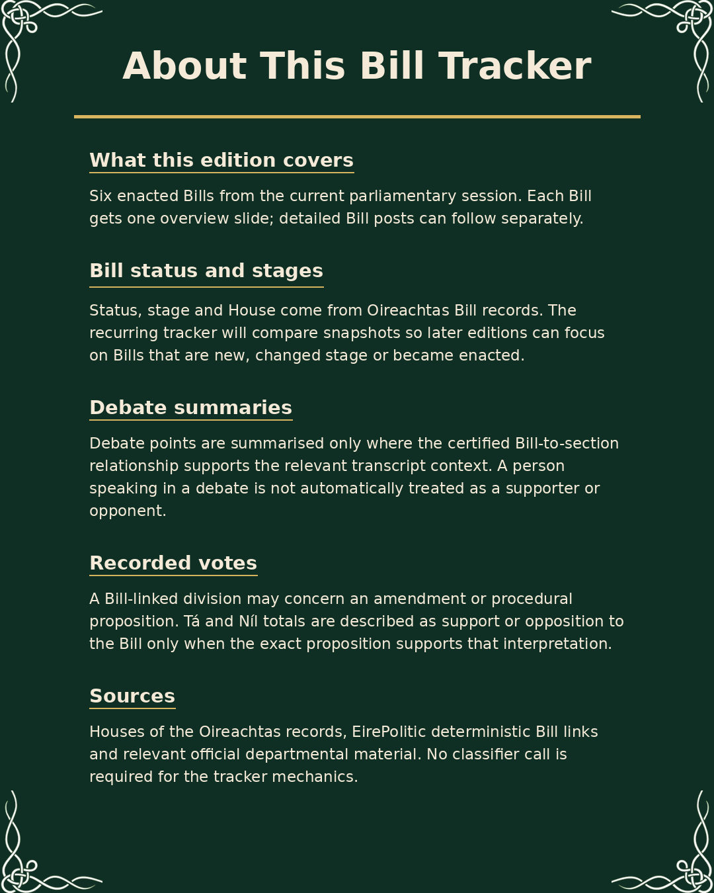

Bills of the Current Session · Enacted Part 1





Caption
Bills of the Current Session — Enacted, Part 1. This first part covers six enacted Bills from the current parliamentary session. Each slide gives a short description of what the law does, who introduced it, and the main debate around it. Recorded divisions are only described as support/opposition where the exact proposition supports that interpretation. A linked vote may instead concern an amendment or procedural question. Source: Houses of the Oireachtas + official departmental material